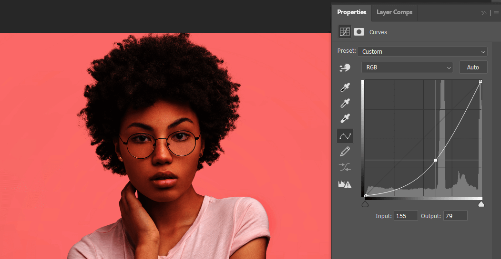
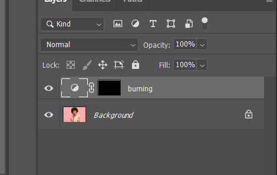
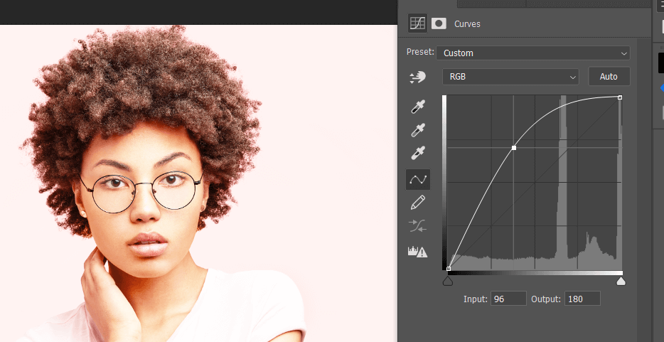
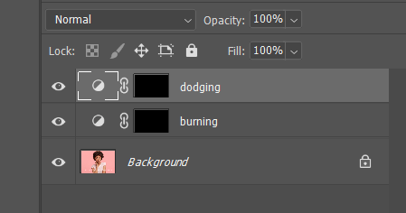
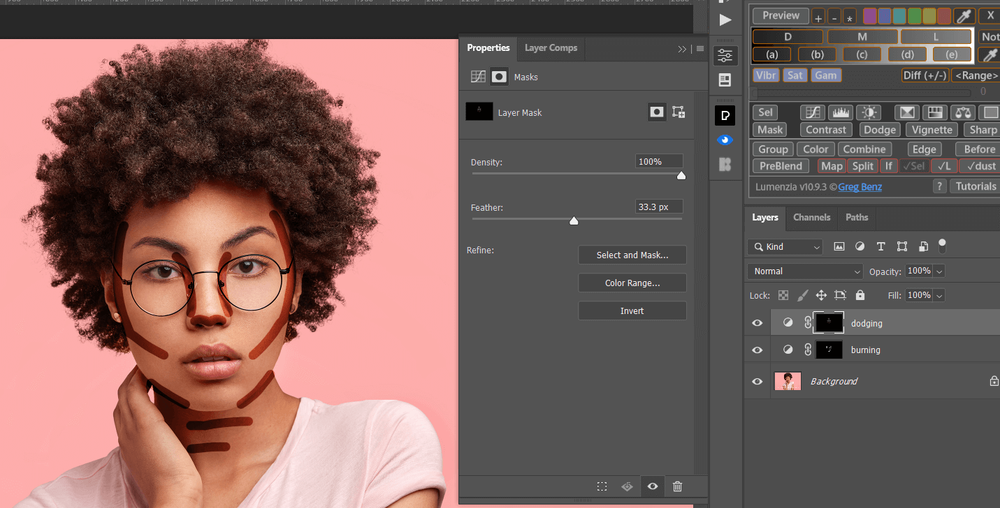
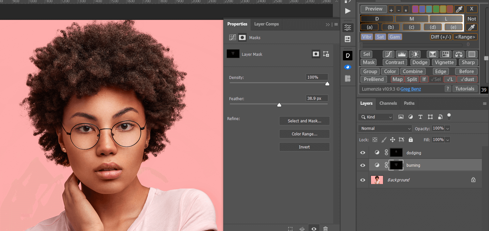

这篇文章上次修改于 613 天前，可能其部分内容已经发生变化，如有疑问可询问作者。

人像面部的 dodge and burning 对提高立体感很有帮助，之前介绍过一些方法来进行这一步，比如通过灰度图层下的 overlay 混合模式配合笔刷工具，通过频率分离调整色彩图层的颜色分布等，下面介绍另一种简单高效的处理过程。
最上面的图片就是典型的人像面部光线分布情况，白色就是高光区域，黑色就是阴影区域，我们要做的就是通过曲线工具建立高光和阴影图层，然后通过笔刷根据典型亮度分布画出各自的蒙版线条，最后通过调整蒙版羽化程度调整效果。
使用到的技术：曲线，蒙版，蒙版属性
原图如下：
建立一个曲线图层 burning，降低亮度：

反转图层蒙版，待后续使用：

类似的方法再次建立一个曲线 dodging，提高亮度：

反转图层蒙版：

下面就可以通过画笔工具根据标准模板分别在两个曲线图层画出高光和阴影线条，注意这里需要使用硬笔刷：
然后就是重点了，进入蒙版属性，调整羽化值，使效果达到合适状态：


最后可以将两个图层合并为组，根据情况调整不透明度。
最终效果对比：
没有评论